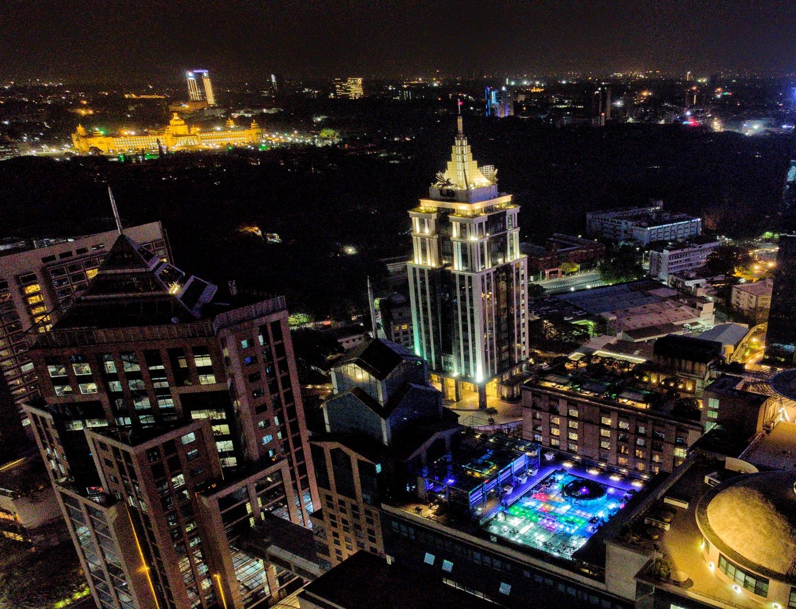
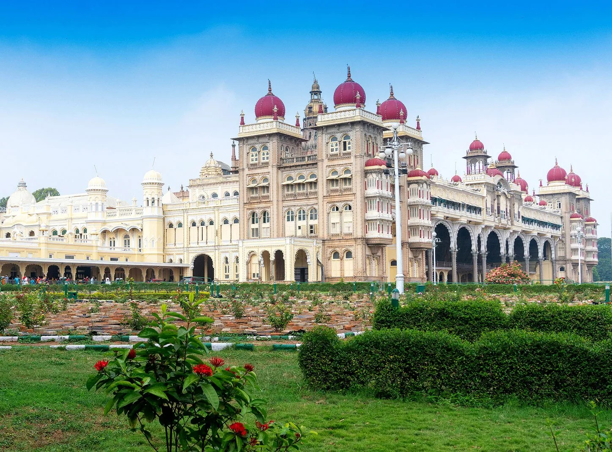

Karnataka is a popular tourist destination with a variety of attractions, including historical sites, wildlife sanctuaries, hill stations, and beautiful beaches.
Tourist destinations include Mysuru Palace, Hampi, Jog Falls, Coorg, and the beaches of Gokarna.
popular places in Karnataka

Bangalore (Bengaluru): The state capital and the IT hub of India, Bangalore is a
cosmopolitan city known for its pleasant climate, tech parks, and vibrant nightlife.

Mysuru (Mysore): for its magnificent Mysore Palace,
Mysuru is a city known for its cultural heritage, silk sarees, and the grand Dasara festival.
most languages used : hindi and Kannada food : kachori , litti chokha , chat
Additional Place in Karnataka for visit
Hampi: A UNESCO World Heritage Site, Hampi is an ancient village with ruins of the Vijayanagara Empire. The unique landscape, ancient temples, and intricate architecture make it a popular tourist destination.
Coorg (Kodagu): Known as the "Scotland of India," Coorg is a hill station famous for its coffee plantations, lush greenery, and scenic landscapes.
Gokarna: A coastal town known for its beautiful beaches and temples, Gokarna has become a popular destination for both pilgrims and beach lovers.
Badami: Known for its cave temples, Badami is an archaeological site that was the capital of the Chalukya dynasty. The rock-cut cave temples and Agastya Lake are major attractions.
Belur and Halebidu: These towns are known for their exquisite Hoysala architecture, particularly the Chennakesava Temple in Belur and the Hoysaleswara Temple in Halebidu..

piyush chaubey :- for hiring or about me click the link :-
Piyush portfolio
prashant dwivedi :- for hiring or about me click the link :-
Prashant portfolio
Contact us: xyz@gmail.com
© copyright reserved since 2023